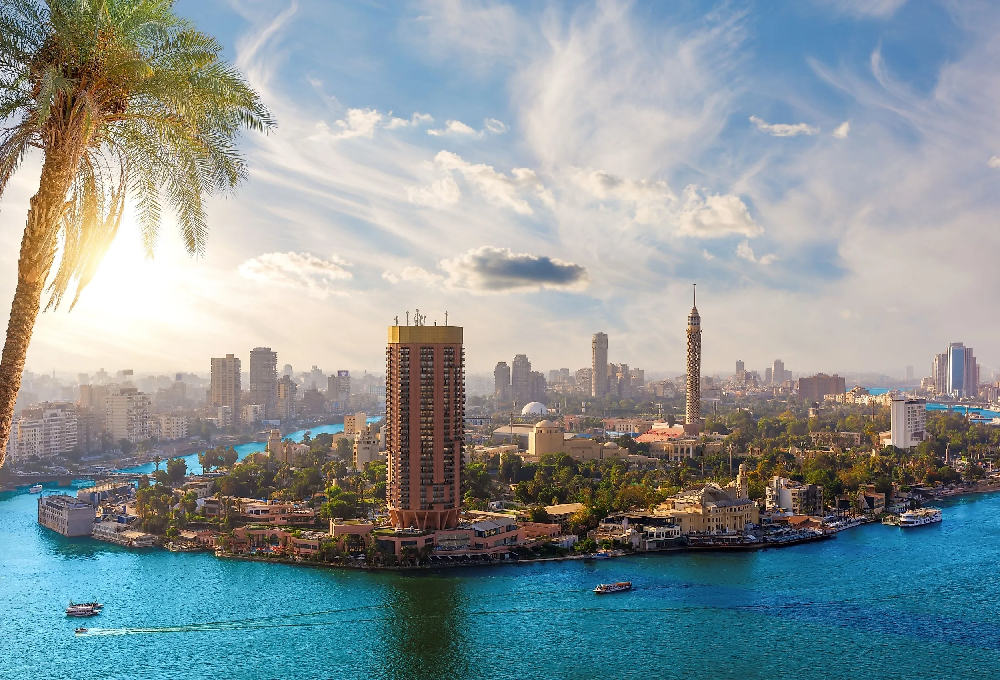

吉薩金字塔與獅身人面像 Pyramids of Giza
位於開羅西南市郊的吉薩高原，三座主要金字塔中最大的是胡夫金字塔，約建於公元前 2560 年，原高 146.6 米，現存約 138.5 米，由約二百三十萬塊石頭砌成，是古代世界七大奇蹟中唯一仍然屹立的一座。金字塔東側的獅身人面像以整塊石灰岩雕成，長約 73 米，被認為是法老哈夫拉的守護者。

埃及 EGYPT
開羅（Cairo）於公元 969 年由法蒂瑪王朝建立，阿拉伯語原名 al-Qāhira，意思是「勝利之城」。早在它建城之前，附近已有公元 641 年建立的福斯塔特，以及更古老的孟菲斯——那是公元前 3100 年左右古王國的首都。
開羅先後在阿尤布、馬木留克與鄂圖曼帝國的統治下發展，長期是伊斯蘭世界最重要的城市之一。1798 年拿破崙率軍入侵埃及；1805 年穆罕默德．阿里建立現代埃及，開羅開始出現歐式大道與新建築。1952 年革命後，開羅成為埃及共和國首都。1979 年，聯合國教科文組織把「伊斯蘭開羅」列入世界文化遺產。
開羅有「千塔之城」的稱號，市內清真寺與宗教學院的宣禮塔密密麻麻，構成這座城市最獨特的天際線。公元 970 年創立的愛資哈爾大學是世界上最古老的大學之一，至今仍是遜尼派伊斯蘭學術重鎮。這座城市同時住著穆斯林與科普特基督徒，教堂與清真寺往往只隔幾條街。
生活層面上，開羅人習慣在咖啡館抽水煙、喝濃紅茶聊天，哈利利市集由十四世紀營業至今。飲食以 koshari（米、通心粉與扁豆混合的平民菜）、烤餅 aish baladi 與烤肉串為主。開羅同時是阿拉伯世界的電影與音樂工業中心，被稱為「中東荷里活」。
開羅的景點跨越五千年，由古王國的金字塔到伊斯蘭時代的市集都值得安排。點擊相片可以放大欣賞。
位於開羅西南市郊的吉薩高原，三座主要金字塔中最大的是胡夫金字塔，約建於公元前 2560 年，原高 146.6 米，現存約 138.5 米，由約二百三十萬塊石頭砌成，是古代世界七大奇蹟中唯一仍然屹立的一座。金字塔東側的獅身人面像以整塊石灰岩雕成，長約 73 米，被認為是法老哈夫拉的守護者。
位於解放廣場，1902 年開館，收藏超過十二萬件古埃及文物，包括圖坦卡門墓出土的黃金面具與陪葬品。近年部分重點藏品已移至吉薩的大埃及博物館展出，出發前宜先確認兩館最新的展出安排，以免撲空。
公元 1176 年由薩拉丁下令興建，用以抵禦十字軍，此後數百年一直是埃及統治者的權力中心。城堡內的穆罕默德．阿里清真寺於十九世紀中葉建成，雪花石膏砌成的圓頂與兩座尖塔非常醒目。由城堡平台可以俯瞰整個開羅市區，天氣好時甚至看到遠處的金字塔。
由十四世紀營業至今，名字來自當時的一位埃米爾。市集內小巷縱橫，賣銅器、香料、香精、紙莎草畫與水煙壺，是感受開羅日常生活最好的地方。逛累了可以走進百年咖啡館 El Fishawy 喝一杯薄荷茶，看人來人往。
用三天行程的角度，快速掌握開羅值得去的地方。